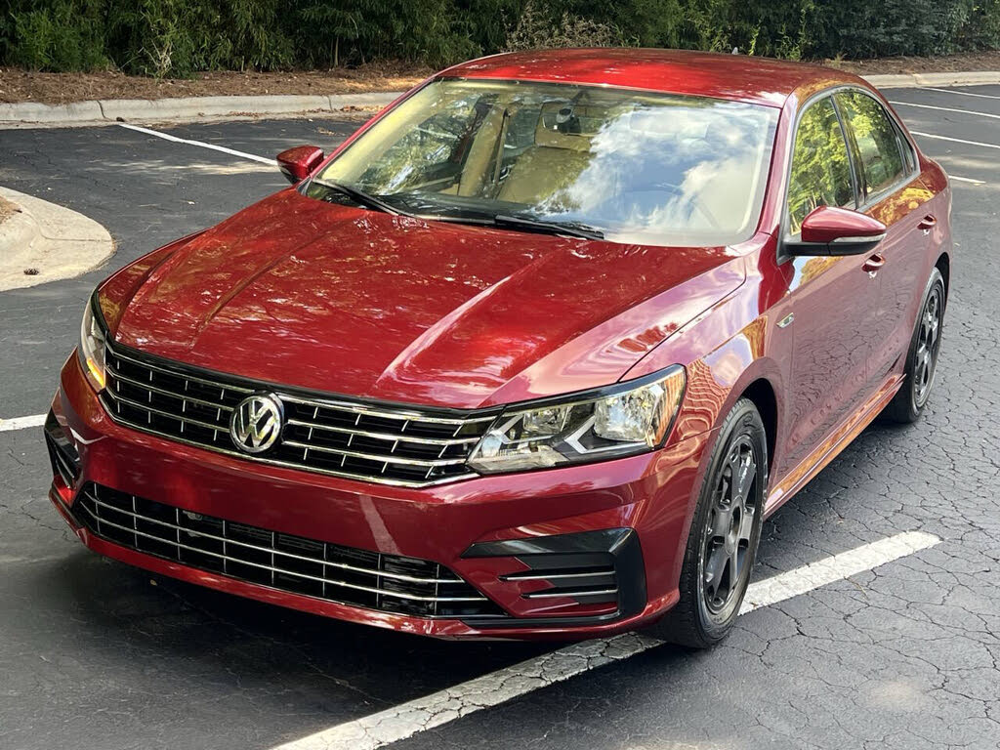
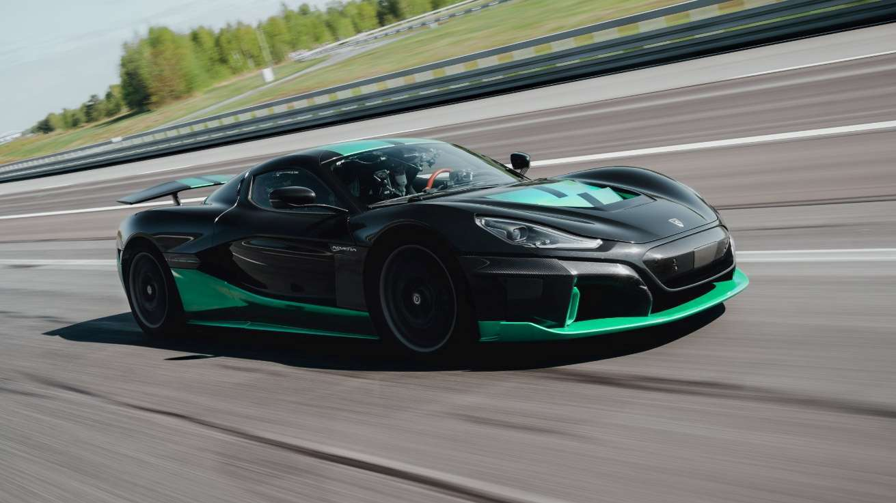

🚗 🚙 Different Perspectives 🏎️ 🏁
Although this website is not meant to be a blog or opinion piece, there is still a place for the consumers’ opinions on cars to be a fact of the matter. We thinks cars can be rather cool and a source of hobby and enjoyment for many people, and a valid element worth considering is the reasons somebody would even choose a particular car over another.
There’s little doubt in car enthusiasts’ minds that most of the truly exciting and good-looking cars today are typically powered by ICE, while many of the hybrids and EVs are often just not as special in comparison. We understand not everybody wants or needs anything more than a Toyota Prius or Honda Clarity, but we can also speak from experience that it can take a lot to convince someone who specifically wants something else to buy one anyways.
If that's the case, what do these 'purists' acually want?
If car manufacturers want to make the purists follow them into the coming age of EVs, they should have alternatives that still appeal to them in key ways. These are people who treat driving as more than a chore, and instead value the experience doing it. The idea is to “trick” them into wanting to switch to an EV despite the differences.
So what are those differences, what is actually "fun" about driving? One of W.A.E.V.'s page developer's, Richard Amey, had some insights on why he's attached to his car:
- My car is special to me, it represents something fundamental about trying to have fun in ways you might not expect. It's not just because it's my first car and has served me well in practical ways, but it goes a setp further to be exhilerating. 250 horsepower 4-cylinder turbo, sportier suspension, a 6-speed manual transmission, and without any after-market mods are more than enough to fight tunnel vision and make driving anything but a chore. Well, unless I'm stuck in heavy traffic, the clutch pedal kinda makes it worse... But the point is that by having a more capable engine and a shifter that feels fun to use, I become one with this beautiful yellow machine. He'll be hard to let go of one day...
We also asked a young woman, Noelle, what she thought of her slightly more normal VW sedan:
- I have a 2018 Volkswagen Passat and I absolutely love it! I appreciate how safe and reliable it is, plus the gas mileage is great. Sport mode makes getting up to speed on the freeway quick and easy. I love that it has a turbo!
If you came to us with concerns about how cars in the future simply won't be as fun anymore, we agree that is a valid concern. For most people, they just want a car that is functional and will get them places. Most of what we discuss here are the cars those people would want, but we can say with confidence that while one great era of automobiles is coming to a close, the next promisses to still be interesting to get behind the wheel of.
The Ford Mustang Mach E helps imply its goal to retain the iconic muscle car’s fun-factor, helping ease ICE purists into the idea of an EV Mustang as the inevitable only engine option it will have. Dodge is trying to emulate the manual transmission in EVs for those who find that part of their ICE car fun. Tesla and Lucid only make EVs, but they are quite performance oriented, to the point the Lucid Air is one of the few cars in the world that can accelerate better than it decelerates. There are also after-market kits that completely replace the ICE engine of an existing car with an electric one, allowing any classic car to become an EV and retain their other charms.


W.A.E.V. Disambiguation Solutions
copyright 2025, no rights reserved